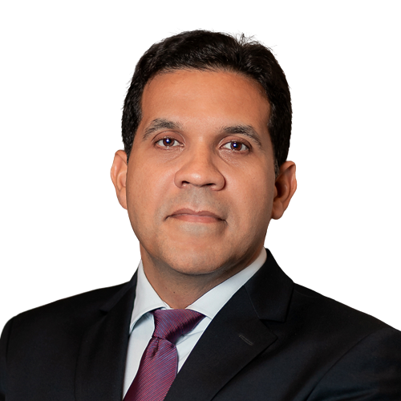
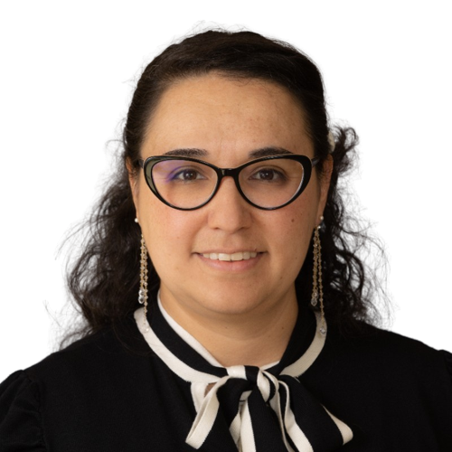
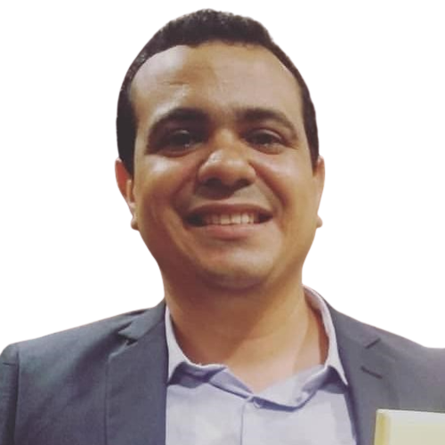
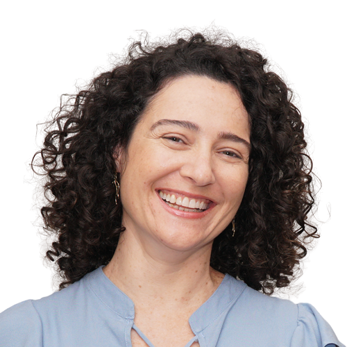
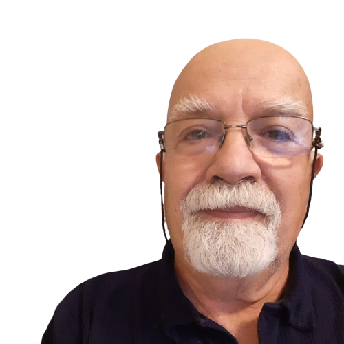
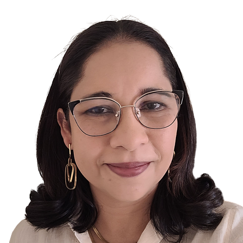
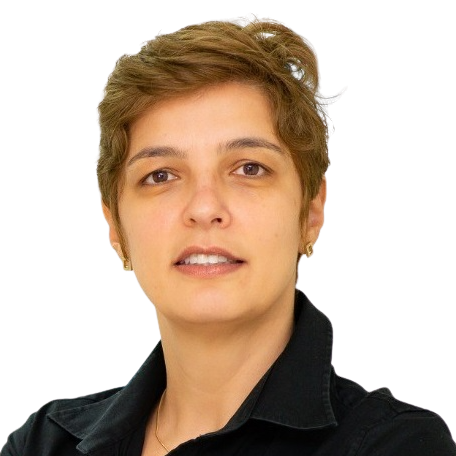
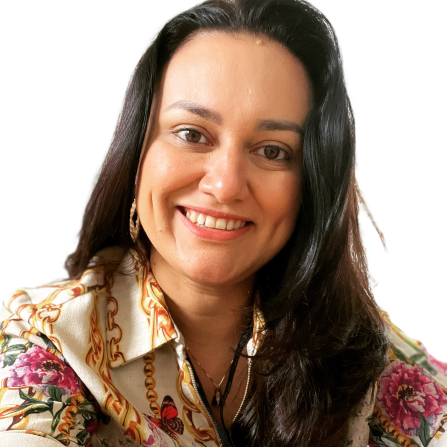
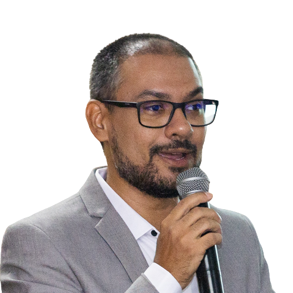

Institucional
O LabPortos é um laboratório especializado na temática portuária, atuando de forma interdisciplinar nos três eixos da universidade, ensino pesquisa e extensão. Foi criado em 2011 pelo Prof. Dr. Sérgio Cutrim no Departamento de Ciências Contábeis e Administração da Universidade Federal do Maranhão. É certificado pela UFMA e pelo CNPQ.
Nossa Missão é: “Conectar o setor portuário com a academia”
Ensino e Educação Executiva

Estudos de Mercado e Inteligência Logística
Sustentabilidade e ESG

Economia Marítima

Relação Porto-Cidade

Planejamento e Produtividade
Inovação Portuária

Dr. Sérgio Cutrim
Coordenador
Doutor em Engenharia Naval e Oceânica pela Universidade de São Paulo, Mestre em Administração. MBA em Finanças Corporativas. Bacharel em Administração. Professor e pesquisador com foco no setor portuário. Professor da Universidade Federal do Maranhão. Coordenador do LabPortos, Observatório Portuário e da Especialização em Logística Portuária. Atua também como Conselheiro Regional no Conselho Regional de Administração do Maranhão e Conselheiro da Fundação Sousândrade

Dra. Cassia Bömer Galvão
Pesquisadora
Possui Doutorado em Ciências Sociais (2017) pela Pontifícia Universidade Católica de São Paulo sendo bolsista pelo CNPQ e realizou em 2014/2015 Doutorado Sanduíche na Texas A&M University (Galveston, Texas) como bolsista pela CAPES/Fulbright. Em 2009 completou o Mestrado em Economia Política pela Pontifícia Universidade Católica de São Paulo e em 2006 graduou-se em Ciências Econômicas pela Fundação Armando Álvares Penteado, em São Paulo. Atua também como membro dos seguintes grupos de pesquisa: 1)PDH (Grupo de Pesquisa para Desenvolvimento Humano) pela PUC-SP, concentrada nos temas de Economia Política (brasileira e internacional); 2) GELNEP (Grupo de Estudos em Logística, Negócios e Engenharia Portuária) pela UFMA; 3) LEHI (Laboratório de Economia & História) pela UFRRJ; 4) PPRN (Port Performance Research Network) filiado ao IAME (International Association of Maritime Economists); e 5) WCTRS-Young, a rede de Jovens Pesquisadores da World Conference on Transport Research Society. Tem experiência de trabalho no setor privado nas áreas de Transporte Marítimo e Logística Internacional; Logística empresarial e Análise de Mercado da carga conteinerizada. Possui também experiência como docente e pesquisadora nas áreas de Economia Internacional, com ênfase em relações do comércio; política comercial; Acordo Comerciais e Integração Econômica; Logística empresarial com ênfase em transporte marítimo internacional. Atualmente pesquisa os seguintes tópicos: desenvolvimento portuário; economia portuária e marítima; política de transportes no Brasil; reforma portuária, cabotagem, infraestrutura de transportes, papel do Estado, planejamento, nacional-desenvolvimentismo.
Dra. Darliane Ribeiro Cunha
Pesquisadora
Professora e Pesquisadora da Universidade Federal do Maranhão. Desenvolveu Projeto de Pós-doutorado na Universidade Autônoma de Barcelona (2018). Doutora em Contabilidade e Finanças pela Universidade de Zaragoza (2016). Mestre em Controladoria e Contabilidade pela Universidade de São Paulo (2002). Professora do Mestrado Profissional em Energia e Ambiente desde 2013. Orientou seis dissertações de mestrado e foi coorientadora de quatro trabalhos. Atualmente orienta quatro dissertações de mestrado. Revisora de periódicos internacionais como Journal of Cleaner Production (Elsevier), Energy, Ecology and Environment (Springer) e outros. Foi Coordenadora do Núcleo de Estudos em Sustentabilidade e Inovação (NEO) na UFMA/CNPQ e pesquisadora do Labportos (UFMA) e do CESS (UFF). Tem experiência em projetos financiados por agências de fomento (CAPES, CNPQ e FAPEMA). Atua em temas ligados à Sustentabilidade, Objetivos de Desenvolvimento Sustentável, Meio Ambiente, Inovação e Estratégia de Negócios.

MSc Diego Lima Bastos
Pesquisador
Engenheiro Ambiental e de Segurança do Trabalho, especialista em Engenharia de Produção e mestre em Energia e Ambiente. Tem experiência técnica e de gestão pública nas áreas de licenciamento ambiental industrial, avaliação de impactos ambientais do setor de infraestrutura e de outorga de uso da água. Foi Vice-Presidente dos Conselhos Estaduais de Meio Ambiente e Recursos Hídricos do Maranhão. Lecionou em cursos técnicos, de graduação e pós-graduação nas áreas de segurança do trabalho, ciências ambientais, gestão ambiental urbana e responsabilidade socioambiental. Esteve à frente do setor de licenciamento do órgão ambiental maranhense quando esse estado obteve a 4º colocação (de um total de 13) no ranking do Índice de Qualidade do Licenciamento Ambiental (IQL) no ano de 2017. Em 2018, foi premiado como um dos melhores autores de projetos de melhoria para o poder público estadual e, em 2019, recebeu a Moção de Aplauso do CONSEMA pelos trabalhos prestados nesse órgão colegiado ambiental estadual. Atualmente é professor do Instituto Federal de Educação, Ciência e Tecnologia do Maranhão (IFMA).

Dra. Flavia Nico Vasconcelos
Pesquisadora
Doutora em Sociologia (PUC-SP/2011), Pós-Doutora em Arquitetura e Urbanismo (UFES/2019), Mestre em Relações Internacionais (PUC-Rio/2001), Economista (UFES/1997). Esteve como visiting scholar no curso de Engenharia do Território do Instituto Superior Técnico de Lisboa (2008) e no Urban Studies Program, da Simon Fraser University, em Vancouver (2014). Pesquisadora associada LabPortos (UFMA), URBLOG (UFMG), Observatório Cidade e Porto (UFES) e NAU (UFES). Pesquisa sobre temas associados às cidades portuárias e aos portos, principalmente comunidades portuárias, gestão e logística urbano-portuária, novas tecnologias, sustentabilidade e economia sustentável.

Dr. Leo Tadeu Robles
Pesquisador
Graduado em Ciências Econômicas (1971), mestrado (1995) e doutorado (2001) em Administração pela Faculdade de Economia e Administração (FEA) da Universidade de São Paulo. Professor pesquisador associado da Universidade Federal do Maranhão - UFMA, participando do Grupo de Pesquisas LabPortos. Atuação como coordenador e professor de cursos de pós-graduação em Gestão Ambiental; Logística; Gestão e Engenharia Portuária e Comércio Exterior. Autor de obras acadêmicas sobre Logística Reversa, Cadeias de Suprimentos, Logística Internacional, Gestão Patrimonial e Logística e Organização e Estrutura Portuária. Experiência na área de Administração de Empresas, com ênfase em Logística, Transportes e Meio Ambiente, principalmente, economia marítima; gestão portuária; gestão ambiental; logística empresarial e internacional; gestão econômica de empresas e comércio exterior. Membro do IAME - International Association of Maritime Economists.

MSc. Luane Lemos Felicio Agostinho
Pesquisadora
Doutoranda em Ciências Jurídicas pela Universidade Autónoma de Lisboa (2016-atual). Mestre em Direito Ambiental pela Universidade do Estado do Amazonas (2010). Possui graduação em Direito pela Universidade Federal do Maranhão (2002). Professora Universitária. Advogada. Pesquisadora. Já desempenhou os cargos de Superintendente de Planejamento Estratégico da Secretaria de Meio Ambiente do Município de São Luís. Coordenadora do Curso de Direito da Faculdade Estácio de São Luís. Coordenadora do Núcleo de Prática Jurídica do Instituto Florence de Ensino Superior. Gerente de Meio Ambiente da Empresa Maranhense de Administração Portuária (Porto do Itaqui). Membro do Conselho Estadual de Meio Ambiente do Maranhão (2018-2021). Membro do Fórum Estadual de Mudanças Climáticas. Membro da Comissão Interinstitucional de Educação Ambiental do MA (2020-2022). Membro e Diretora do Fórum Estadual de Educação Ambiental (2021-2022). Membro da Comissão de Juristas para atualização do Código de Meio Ambiente do Estado do MA (2021). Auditora Líder em Auditoria da Resolução CONAMA 306/02 (para portos e instalações portuárias). Auditora interna da ISO 14001. Tem experiência em Direito Ambiental, com ênfase em Populações Tradicionais. Ministra aulas de Direito Ambiental, Agrário, Processo Civil, Ética, Direitos Reais e disciplinas afins.

MSc. Luciana Cardoso Guerise
Pesquisadora
Possui graduação em Ciências Contábeis pela Universidade Católica de Santos (2003) e mestrado em Gestão de Negócios pela Universidade Católica de Santos (2006). Coordenou o curso de tecnologia em gestão portuária na UniSantos com criação do laboratório portuário. Atualmente é gerente de relações institucionais da BTP, já foi diretora executiva da ATP - Associação dos Terminais Portuários Privados. Exerceu o cargo de Gerente de Projetos da ABTP - Associação Brasileira dos Terminais Portuários, já foi assessora da Diretoria Comercial e de Desenvolvimento - Cia Docas do Estado de São Paulo, Professor Titular da Universidade Católica de Santos. Tem experiência na área de Administração, Regulação Portuária e Planejamento, atuando principalmente nos seguintes temas: porto de santos, porto, comércio exterior, logística internacional e custo portuário.
MSc. Raul Lamarca Portela e Silva
Pesquisador
Profissional com 10 anos de experiência em grandes empresas dos ramos de bebidas, gestão imobiliária e logística portuária, e em múltiplas áreas como logística, comercial, relações institucionais e inovação. É certificado como gerente de inovação (ISO 56002) e como Scrum Master (Scrum Alliance). Possui graduação em Administração pela Universidade Federal do Maranhão (2013), especialização em Gestão Empresarial pela Fundação Getúlio Vargas (FGV, 2017)) e mestrado em Mestrado em Contabilidade e Administração - FUCAPE ENSINO E PARTICIPAÇÕES LIMITADA (Fucape-MA) (2021). Diretor-Presidente do Sindicato dos Operadores Portuários do Maranhão.

Dra. Susanne Carolinne Ferreira Cutrim
Pesquisadora
Possui graduação em Bacharelado e Licenciatura em Ciências Biológicas pela Universidade Federal do Maranhão, Mestrado e Doutorado em Ciências pelo Programa de Alergia e Imunopatologia da Faculdade de Medicina da USP. Foi coordenadora do Núcleo de Pesquisa e docente da Faculdade Estácio São Luís. Possui experiência na docência nas disciplinas de Imunopatologia, Políticas Públicas em Saúde, Biologia Celular, Patologia Humana, Biossegurança e Controle de Qualidade, Histologia e Embriologia. Foi consultora atuando como coordenadora local do Projeto Ciclo Saúde em parceria com a Fundação VALE e o CEDAPS. Concluiu o pós-doutorado na Universidade CEUMA. Na área da pesquisa tem experiência, principalmente, em Epidemiologia, Educação Ambiental, Imunologia e Alergia Alimentar. Atua também nas áreas de Políticas Públicas em Saúde, Controle de Qualidade, Biossegurança e Sustentabilidade.

Dr. Tadeu Gomes Teixeira
Pesquisador
Doutor em Ciências Sociais pela Universidade Estadual de Campinas - Unicamp (2013), Mestre em Administração pela Universidade Federal do Espírito Santo (2010) e Especialista em Gestão de Organizações de Ciência e Tecnologia pela ENSP/Fiocruz (2014). É professor do Departamento de Administração e Ciências Contábeis na Universidade Federal do Maranhão (UFMA). É coautor da Cartilha de Combate ao Assédio Moral e Sexual na Fiocruz (disponível online) e autor de um dos únicos livros sobre o sistema postal brasileiro, intitulado Os Correios e as Políticas Governamentais: mudanças e permanências (Edufba - disponível online). Tem experiência em Gestão de Organizações de CT&I (Fiocruz e Incra) e em gestão de projetos de pesquisa e extensão (Procad, Universal Cnpq, gestão de TEDs para projetos ministeriais etc.) nas áreas de gestão pública, regulação de mercado, políticas públicas e sociologia do trabalho. Atualmente coordena um projeto piloto de Iniciação Científica na modalidade remota, uma parceria Capes/UFMA. Interesses atuais de pesquisa: Avaliação de Políticas Públicas e Data Science aplicada à Gestão. É líder do Grupo de Pesquisa em Políticas Públicas e Estudos Organizacionais - GPPDEO (http://gppdeo.org/)